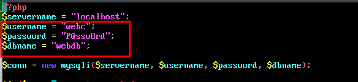
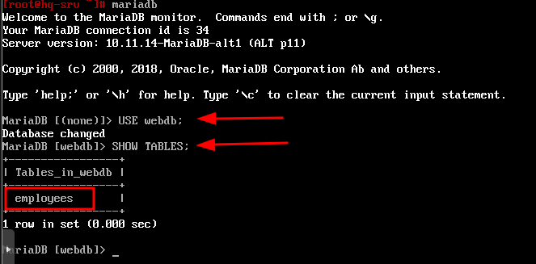
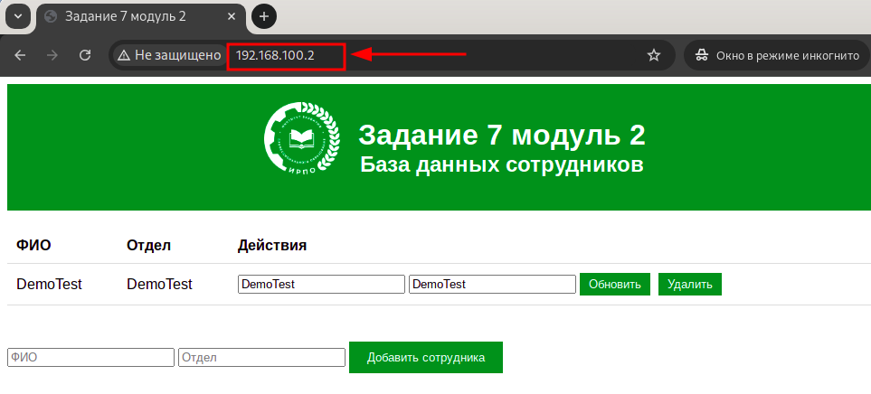
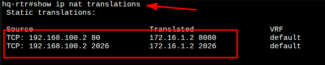
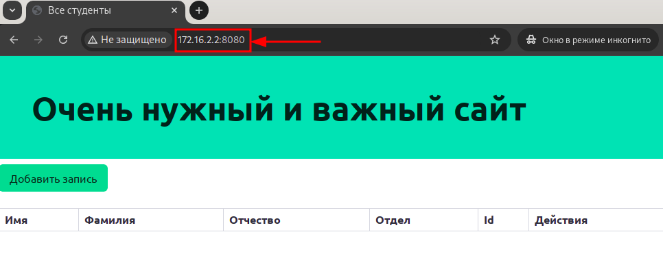
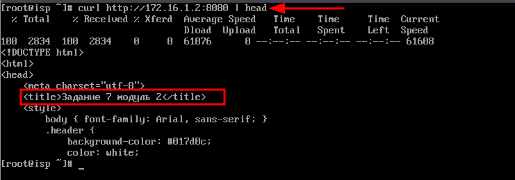
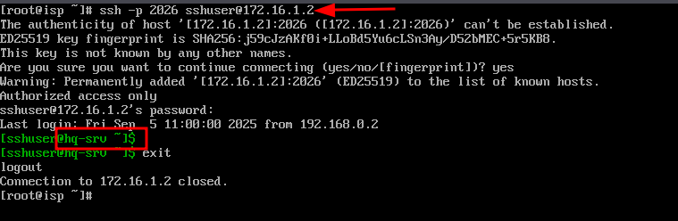
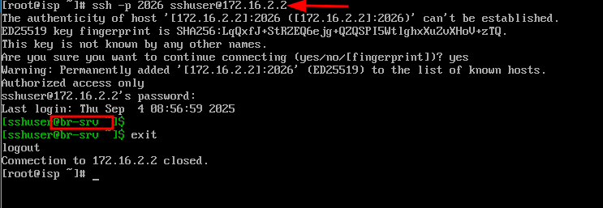
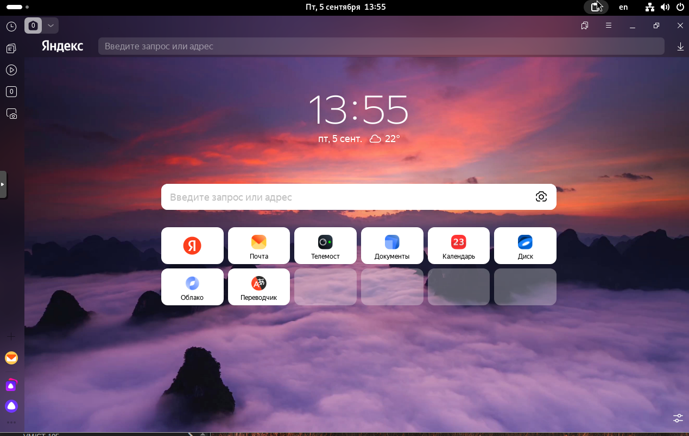

write memory.
Настройка корпоративной сети HQ ↔ BR
Руководство для первого запуска учебного стенда: внешняя сеть, два офиса, серверы, клиент. Здесь есть понятные шаги, проверка результата и пояснения к ключевым настройкам.
EcoRouter
ALT Linux
OSPF
GRE
iptables · MASQUERADE
DHCP
SSH
00📘 Как пользоваться этой методичкой
Это пошаговое руководство для студентов, которые впервые видят стенд. Выполняйте команды строго по порядку, сначала читайте пояснения, потом вводите команды.
Что здесь есть
- Готовые команды для Linux и EcoRouter.
- Объяснение того, зачем выполняется каждый шаг.
- Проверки результата после каждого блока.
Как читать команды
[root@isp ~]#илиhq-rtr#— это приглашение, вводите только строку после него.bash— команды для Linux-серверов и клиентской машины.cisco/plaintext— команды для EcoRouter.
💡
Если что-то непонятно
Не спешите. Сначала прочтите короткий абзац перед командой и только потом вводите её. Если команда не сработала, скопируйте её заново вручную, чтобы не сохранить лишние символы.
📍
Устройства в стенде
- ISP — внешний роутер, от него идёт интернет и маршруты к офисам.
- HQ-RTR — центральный офис, где настраивается VLAN, DHCP и GRE.
- BR-RTR — филиал, LAN и туннель к HQ.
- HQ-SRV — сервер с DNS, RAID, NFS.
- BR-SRV — сервер домена Samba DC.
- HQ-CLI — рабочая станция студента, получает адрес по DHCP.
📒
Шпаргалка: горячие клавиши nano и vim
пригодится в каждом шаге, где правится конфиг
nano (по умолчанию в ALT)
| Ctrl+O, Enter | сохранить (write out) |
| Ctrl+X | выйти (спросит сохранение) |
| Ctrl+W | поиск (Where Is), Alt+W — следующий |
| Ctrl+\ | поиск с заменой |
| Ctrl+K / Ctrl+U | вырезать / вставить строку |
| Alt+U / Alt+E | отменить / повторить |
| Alt+G | перейти к строке номер |
| Ctrl+_ | перейти к строке/символу |
| Ctrl+G | встроенная справка |
| Ctrl+C | текущая позиция курсора |
vim / vi (если нужен)
| i / Esc | войти в insert / вернуться в command |
| :w Enter | сохранить |
| :q / :q! | выйти / выйти без сохранения |
| :wq или ZZ | сохранить и выйти |
| /текст Enter | поиск, далее n / N |
| :%s/old/new/g | замена по всему файлу |
| dd / yy / p | удалить / скопировать / вставить строку |
| u / Ctrl+R | отменить / повторить |
| gg / G | в начало / в конец файла |
| :номер Enter | перейти к строке N |
01🔑 Учётные данные
Начальный доступ (до настройки)
Локальные учётки на момент первого входа — до того, как раздел 06 создаст рабочих пользователей.
| Устройство | Логин | Пароль |
|---|---|---|
| PVE (гипервизор) | root | P@ss090206! |
| HQ-RTR, BR-RTR | admin | admin |
| HQ-SRV, BR-SRV | root | P@ss090206! |
| HQ-CLI | stud | P@ss090206! |
Созданные по заданию
Учётки, которые создаются в разделе 06 и далее используются для SSH (раздел 07) и Ansible (раздел 18).
| Устройство | Логин | Пароль | Особенности |
|---|---|---|---|
| HQ-SRV, BR-SRV | sshuser | P@ssw0rd | UID 2026, группа wheel, sudo без пароля, SSH на порту 2026 |
| HQ-RTR, BR-RTR | net_admin | P@ssw0rd | role admin в EcoRouter |
💡
Где какой пароль
Для PVE/HQ-CLI —
P@ss090206! (локальный пароль образа). Для рабочих учёток (sshuser, net_admin) по заданию методички — P@ssw0rd.
02🗺️ Схема сети и адресация
┌────────────┐
│ ISP │ ens19 → uplink
│ │
ens20 ───┤ ├─── ens21
172.16.1.1/28 172.16.2.1/28
│ │
└─────┬──────┘
│
┌──────────────┼──────────────┐
│ │
172.16.1.2/28 172.16.2.2/28
┌────────┐ ┌────────┐
│ HQ-RTR │◄──── GRE 10.10.10.0/30 ────►│ BR-RTR │
└───┬────┘ └───┬────┘
│ │
┌───┴────────┐ │
│ VL100 .1/27│ ── HQ-SRV │ int1: 192.168.0.1/28
│ VL200 .1/24│ ── HQ-CLI │ └─ BR-SRV: .2
│ VL999 .1/29│ ── mgmt │
└────────────┘ │Таблица подсетей
| Сегмент | Подсеть | Шлюз | Назначение |
|---|---|---|---|
| VLAN 100 | 192.168.100.0/27 | 192.168.100.1 | HQ-SRV |
| VLAN 200 | 192.168.200.0/24 | 192.168.200.1 | HQ-CLI (DHCP) |
| VLAN 999 | 192.168.99.0/29 | 192.168.99.1 | management |
| BR LAN | 192.168.0.0/28 | 192.168.0.1 | BR-SRV и др. |
| ISP <-> HQ-RTR | 172.16.1.0/28 | 172.16.1.1 | uplink HQ |
| ISP <-> BR-RTR | 172.16.2.0/28 | 172.16.2.1 | uplink BR |
| GRE Tunnel | 10.10.10.0/30 | — | HQ-RTR ↔ BR-RTR |
03⚙️ Базовая настройка устройств
ISP
bash[root@stendssa ~]# hostnamectl set-hostname isp; bash [root@isp ~]#
HQ-RTR
Hostname и домен
ciscoecorouter#enable ecorouter#configure terminal ecorouter(config)#hostname hq-rtr hq-rtr(config)#ip domain-name au-team.irpo hq-rtr(config)#exit hq-rtr#write memory hq-rtr#show hostname hq-rtr#show running-config | include domain-name
VLAN-интерфейсы
ciscohq-rtr(config)#interface vl100 hq-rtr(config-if)#ip address 192.168.100.1/27 hq-rtr(config-if)#exit hq-rtr(config)#interface vl200 hq-rtr(config-if)#ip address 192.168.200.1/24 hq-rtr(config-if)#exit hq-rtr(config)#interface vl999 hq-rtr(config-if)#ip address 192.168.99.1/29 hq-rtr(config-if)#exit
Service-instances (dot1q) на порту te1
ciscohq-rtr(config)#port te1 hq-rtr(config-port)#service-instance te1/vl100 hq-rtr(config-service-instance)#encapsulation dot1q 100 exact hq-rtr(config-service-instance)#rewrite pop 1 hq-rtr(config-service-instance)#connect ip interface vl100 hq-rtr(config-service-instance)#exit hq-rtr(config-port)#service-instance te1/vl200 hq-rtr(config-service-instance)#encapsulation dot1q 200 exact hq-rtr(config-service-instance)#rewrite pop 1 hq-rtr(config-service-instance)#connect ip interface vl200 hq-rtr(config-service-instance)#exit hq-rtr(config-port)#service-instance te1/vl999 hq-rtr(config-service-instance)#encapsulation dot1q 999 exact hq-rtr(config-service-instance)#rewrite pop 1 hq-rtr(config-service-instance)#connect ip interface vl999 hq-rtr(config-service-instance)#exit hq-rtr(config-port)#exit hq-rtr(config)#exit hq-rtr#write memory hq-rtr#show ip interface brief
BR-RTR
Hostname и домен
ciscoecorouter#enable ecorouter#configure terminal ecorouter(config)#hostname br-rtr br-rtr(config)#ip domain-name au-team.irpo br-rtr(config)#exit br-rtr#write memory br-rtr#show hostname br-rtr#show running-config | include domain-name
LAN-интерфейс int1 и сервисная привязка
ciscobr-rtr(config)#interface int1 br-rtr(config-if)#ip address 192.168.0.1/28 br-rtr(config)#port te1 br-rtr(config-port)#service-instance te1/int1 br-rtr(config-service-instance)#encapsulation untagged br-rtr(config-service-instance)#connect ip interface int1 br-rtr(config-service-instance)#exit br-rtr(config-port)#exit br-rtr(config)#exit br-rtr#write memory br-rtr#show ip interface brief
HQ-SRV
bash[root@alt ~]# hostnamectl set-hostname hq-srv.au-team.irpo; bash [root@hq-srv ~]# echo "192.168.100.2/27" > /etc/net/ifaces/ens19/ipv4address [root@hq-srv ~]# echo "default via 192.168.100.1" > /etc/net/ifaces/ens19/ipv4route [root@hq-srv ~]# echo "nameserver 95.167.167.95" > /etc/net/ifaces/ens19/resolv.conf [root@hq-srv ~]# echo "nameserver 95.167.167.96" >> /etc/net/ifaces/ens19/resolv.conf [root@hq-srv ~]# systemctl restart network [root@hq-srv ~]# ip -c a
BR-SRV
bash[root@alt ~]# hostnamectl set-hostname br-srv.au-team.irpo; bash [root@br-srv ~]# echo "192.168.0.2/28" > /etc/net/ifaces/ens19/ipv4address [root@br-srv ~]# echo "default via 192.168.0.1" > /etc/net/ifaces/ens19/ipv4route [root@br-srv ~]# echo "nameserver 95.167.167.95" > /etc/net/ifaces/ens19/resolv.conf [root@br-srv ~]# echo "nameserver 95.167.167.96" >> /etc/net/ifaces/ens19/resolv.conf [root@br-srv ~]# systemctl restart network [root@br-srv ~]# ip -c a
HQ-CLI
HQ-CLI — это рабочая станция с графической оболочкой (ALT Workstation). Вместо ручного редактирования файлов /etc/net/ifaces/... здесь удобнее использовать Центр Управления Системой (ЦУС, он же alterator) — графический менеджер, в котором можно задать имя хоста и параметры сети.
1. Hostname через ЦУС
- Открыть Меню → Системные → Центр управления системой (или запустить
acc). - Раздел Сеть → Ethernet-интерфейсы → поле «Имя компьютера» → ввести
hq-cli.au-team.irpo→ Применить. - Перезагрузить устройство, чтобы новое имя применилось ко всем сервисам.
💡
Альтернатива в терминалеТо же самое можно сделать командой:
[stud@hq-cli ~]$ sudo hostnamectl set-hostname hq-cli.au-team.irpo
[stud@hq-cli ~]$ exec bash
[stud@hq-cli ~]$ hostname -f/etc/sysconfig/network (параметр HOSTNAME=), чтобы оно сохранилось после перезагрузки независимо от способа.
📡
IPv4 — через DHCPHQ-CLI находится в VLAN 200, где на HQ-RTR настроен DHCP-сервер (см. раздел 11). Машина получит адрес автоматически:
192.168.200.2/24, шлюз 192.168.200.1, DNS 192.168.100.2. Дополнительно настраивать ens19 не нужно.2. Проверка
bash[stud@hq-cli ~]$ hostname -f # hq-cli.au-team.irpo [stud@hq-cli ~]$ ip a # ens19 имеет 192.168.200.2/24 [stud@hq-cli ~]$ ping -c3 192.168.200.1 # шлюз [stud@hq-cli ~]$ ping -c3 192.168.100.2 # HQ-SRV [stud@hq-cli ~]$ host hq-srv.au-team.irpo # после поднятия DNS
📋
Адресация HQ-CLI (для отчёта)
| Имя | hq-cli.au-team.irpo |
| IP | 192.168.200.2/24 |
| Шлюз | 192.168.200.1 |
| DNS | 192.168.100.2 (HQ-SRV) |
04🌍 Настройка ISP: IP, NAT, форвардинг
1. Скопировать шаблон интерфейса
bash[root@isp ~]# cp -r /etc/net/ifaces/ens19 /etc/net/ifaces/ens20 [root@isp ~]# cp -r /etc/net/ifaces/ens19 /etc/net/ifaces/ens21
2. Удалить маршрут по умолчанию у внутренних интерфейсов
bash[root@isp ~]# rm -rf /etc/net/ifaces/ens2*/ipv4route
3. Назначить IP-адреса
bash[root@isp ~]# echo "172.16.1.1/28" > /etc/net/ifaces/ens20/ipv4address [root@isp ~]# echo "172.16.2.1/28" > /etc/net/ifaces/ens21/ipv4address
4. Применить настройки и проверить
bash[root@isp ~]# systemctl restart network [root@isp ~]# ip -c a
5. Включить IP-форвардинг
bash[root@isp ~]# nano /etc/net/sysctl.conf
nano:Ctrl+O, Enter — сохранитьCtrl+X — выйтиCtrl+W — поискCtrl+K / Ctrl+U — вырезать / вставить строкуAlt+U — отменить
В файле заменить:
diff- net.ipv4.ip_forward = 0 + net.ipv4.ip_forward = 1
bash[root@isp ~]# systemctl restart network [root@isp ~]# sysctl net.ipv4.ip_forward
6. NAT (MASQUERADE) для исходящего трафика
bash[root@isp ~]# iptables -t nat -A POSTROUTING -s 172.16.1.0/28 -o ens19 -j MASQUERADE [root@isp ~]# iptables -t nat -A POSTROUTING -s 172.16.2.0/28 -o ens19 -j MASQUERADE [root@isp ~]# iptables-save >> /etc/sysconfig/iptables [root@isp ~]# systemctl enable --now iptables
7. Проверка правил
bash[root@isp ~]# iptables -t nat -L -n -v
⚠️
ВажноВ исходнике использовались длинные тире
– вместо обычных - — типичная ошибка копипаста, iptables такие команды не примет. Здесь флаги уже исправлены.05🔌 Подключение HQ-RTR и BR-RTR к интернету
HQ-RTR
ciscohq-rtr#enable hq-rtr#configure terminal hq-rtr(config)#interface isp hq-rtr(config-if)#ip address 172.16.1.2/28 hq-rtr(config-if)#exit hq-rtr(config)#ip route 0.0.0.0/0 172.16.1.1 hq-rtr(config)#port te0 hq-rtr(config-port)#service-instance te0/isp hq-rtr(config-service-instance)#encapsulation untagged hq-rtr(config-service-instance)#connect ip interface isp hq-rtr(config-service-instance)#exit hq-rtr(config-port)#exit hq-rtr(config)#exit hq-rtr#write memory hq-rtr#show ip interface brief
BR-RTR
ciscobr-rtr#enable br-rtr#configure terminal br-rtr(config)#interface isp br-rtr(config-if)#ip address 172.16.2.2/28 br-rtr(config-if)#exit br-rtr(config)#ip route 0.0.0.0/0 172.16.2.1 br-rtr(config)#port te0 br-rtr(config-port)#service-instance te0/isp br-rtr(config-service-instance)#encapsulation untagged br-rtr(config-service-instance)#connect ip interface isp br-rtr(config-service-instance)#exit br-rtr(config-port)#exit br-rtr(config)#exit br-rtr#write memory br-rtr#show ip interface brief
06👤 Создание пользователей
🔑
Пароли по заданию
На
passwd sshuser и password в EcoRouter ввести P@ssw0rd (это требование методички, не путать с локальным P@ss090206!).
HQ-SRV
bash[root@hq-srv ~]# useradd -u 2026 sshuser [root@hq-srv ~]# passwd sshuser # ввести P@ssw0rd [root@hq-srv ~]# usermod -aG wheel sshuser [root@hq-srv ~]# echo "sshuser ALL=(ALL:ALL) NOPASSWD: ALL" >> /etc/sudoers
BR-SRV
bash[root@br-srv ~]# useradd -u 2026 sshuser [root@br-srv ~]# passwd sshuser # ввести P@ssw0rd [root@br-srv ~]# usermod -aG wheel sshuser [root@br-srv ~]# echo "sshuser ALL=(ALL:ALL) NOPASSWD: ALL" >> /etc/sudoers
⚠️
ВниманиеЗапись
> /etc/sudoers перезаписывает файл целиком. На «боевой» системе так делать нельзя — используйте visudo или отдельный файл в /etc/sudoers.d/. Для учебного стенда оставлено как в исходной методичке.HQ-RTR
ciscohq-rtr#configure terminal hq-rtr(config)#username net_admin hq-rtr(config-user)#password P@ssw0rd hq-rtr(config-user)#role admin hq-rtr(config-user)#exit hq-rtr(config)#exit hq-rtr#write memory
BR-RTR
ciscobr-rtr#configure terminal br-rtr(config)#username net_admin br-rtr(config-user)#password P@ssw0rd br-rtr(config-user)#role admin br-rtr(config-user)#exit br-rtr(config)#exit br-rtr#write memory
07🔒 Настройка SSH на серверах
| Параметр | Значение |
|---|---|
| Порт | 2026 |
| Разрешённые пользователи | sshuser |
| MaxAuthTries | 2 |
| Banner | Authorized access only! |
HQ-SRV
bash[root@hq-srv ~]# echo "Port 2026" >> /etc/openssh/sshd_config [root@hq-srv ~]# echo "AllowUsers sshuser" >> /etc/openssh/sshd_config [root@hq-srv ~]# echo "MaxAuthTries 2" >> /etc/openssh/sshd_config [root@hq-srv ~]# echo "Banner /etc/openssh/banner" >> /etc/openssh/sshd_config [root@hq-srv ~]# echo "Authorized access only!" > /etc/openssh/banner [root@hq-srv ~]# systemctl restart sshd [root@hq-srv ~]# ssh -p 2026 sshuser@localhost
BR-SRV
bash[root@br-srv ~]# echo "Port 2026" >> /etc/openssh/sshd_config [root@br-srv ~]# echo "AllowUsers sshuser" >> /etc/openssh/sshd_config [root@br-srv ~]# echo "MaxAuthTries 2" >> /etc/openssh/sshd_config [root@br-srv ~]# echo "Banner /etc/openssh/banner" >> /etc/openssh/sshd_config [root@br-srv ~]# echo "Authorized access only!" > /etc/openssh/banner [root@br-srv ~]# systemctl restart sshd [root@br-srv ~]# ssh -p 2026 sshuser@localhost
💡
ПравкаВ исходнике этот раздел был озаглавлен
BR-RTR, хотя команды относятся к BR-SRV — здесь поправлено.08🛡️ GRE-туннель между HQ-RTR и BR-RTR
| Конец туннеля | Адрес | Source | Destination |
|---|---|---|---|
| HQ-RTR | 10.10.10.1/30 | 172.16.1.2 | 172.16.2.2 |
| BR-RTR | 10.10.10.2/30 | 172.16.2.2 | 172.16.1.2 |
HQ-RTR
ciscohq-rtr(config)#interface tunnel.0 hq-rtr(config-if-tunnel)#description "GRE" hq-rtr(config-if-tunnel)#ip address 10.10.10.1/30 hq-rtr(config-if-tunnel)#ip tunnel 172.16.1.2 172.16.2.2 mode gre hq-rtr(config-if-tunnel)#exit hq-rtr(config)#write memory hq-rtr(config)#exit hq-rtr#show interface tunnel.0
BR-RTR
ciscobr-rtr(config)#interface tunnel.0 br-rtr(config-if-tunnel)#description "GRE" br-rtr(config-if-tunnel)#ip address 10.10.10.2/30 br-rtr(config-if-tunnel)#ip tunnel 172.16.2.2 172.16.1.2 mode gre br-rtr(config-if-tunnel)#exit br-rtr(config)#write memory br-rtr(config)#exit br-rtr#show interface tunnel.0
09🔁 OSPF поверх туннеля
| Параметр | Значение |
|---|---|
| Process ID | 1 |
| Area | 0 (backbone) |
| Аутентификация | MD5, ключ P@ssw0rd (key id 1) |
| Активный интерфейс | только tunnel.0 |
HQ-RTR
ciscohq-rtr(config)#router ospf 1 hq-rtr(config-router)#ospf router-id 10.10.10.1 hq-rtr(config-router)#passive-interface default hq-rtr(config-router)#no passive-interface tunnel.0 hq-rtr(config-router)#network 10.10.10.0/30 area 0 hq-rtr(config-router)#network 192.168.100.0/27 area 0 hq-rtr(config-router)#network 192.168.200.0/24 area 0 hq-rtr(config-router)#network 192.168.99.0/29 area 0 hq-rtr(config-router)#exit hq-rtr(config)#interface tunnel.0 hq-rtr(config-if-tunnel)#ip ospf authentication message-digest hq-rtr(config-if-tunnel)#ip ospf message-digest-key 1 md5 P@ssw0rd hq-rtr(config-if-tunnel)#exit hq-rtr(config)#write memory hq-rtr(config)#exit hq-rtr#show ip ospf interface brief hq-rtr#show ip ospf neighbor hq-rtr#show ip ospf route
BR-RTR
ciscobr-rtr(config)#router ospf 1 br-rtr(config-router)#ospf router-id 10.10.10.2 br-rtr(config-router)#passive-interface default br-rtr(config-router)#no passive-interface tunnel.0 br-rtr(config-router)#network 192.168.0.0/28 area 0 br-rtr(config-router)#network 10.10.10.0/30 area 0 br-rtr(config-router)#exit br-rtr(config)#interface tunnel.0 br-rtr(config-if-tunnel)#ip ospf authentication message-digest br-rtr(config-if-tunnel)#ip ospf message-digest-key 1 md5 P@ssw0rd br-rtr(config-if-tunnel)#exit br-rtr(config)#write memory br-rtr(config)#exit br-rtr#show ip ospf interface brief br-rtr#show ip ospf neighbor br-rtr#show ip ospf route
10🌐 NAT на пограничных маршрутизаторах
HQ-RTR
ciscohq-rtr(config)#interface isp hq-rtr(config-if)#ip nat outside hq-rtr(config-if)#exit hq-rtr(config)#interface vl100 hq-rtr(config-if)#ip nat inside hq-rtr(config-if)#exit hq-rtr(config)#interface vl200 hq-rtr(config-if)#ip nat inside hq-rtr(config-if)#exit hq-rtr(config)#interface vl999 hq-rtr(config-if)#ip nat inside hq-rtr(config-if)#exit hq-rtr(config)#ip nat pool v100 192.168.100.1-192.168.100.30 hq-rtr(config)#ip nat pool v200 192.168.200.1-192.168.200.254 hq-rtr(config)#ip nat pool v999 192.168.99.1-192.168.99.6 hq-rtr(config)#ip nat source dynamic inside-to-outside pool v100 overload interface isp hq-rtr(config)#ip nat source dynamic inside-to-outside pool v200 overload interface isp hq-rtr(config)#ip nat source dynamic inside-to-outside pool v999 overload interface isp hq-rtr(config)#exit hq-rtr#write memory
BR-RTR
ciscobr-rtr(config)#interface isp br-rtr(config-if)#ip nat outside br-rtr(config-if)#exit br-rtr(config)#interface int1 br-rtr(config-if)#ip nat inside br-rtr(config-if)#exit br-rtr(config)#ip nat pool br-net 192.168.0.1-192.168.0.14 br-rtr(config)#ip nat source dynamic inside-to-outside pool br-net overload interface isp br-rtr(config)#exit br-rtr#write memory
11📡 DHCP на VLAN 200
В качестве DHCP-сервера выступает HQ-RTR, клиентом — HQ-CLI. Адрес самого HQ-RTR (192.168.200.1) исключается из выдачи; шлюзом выдаётся он же, DNS — HQ-SRV, DNS-суффикс — au-team.irpo.
Параметры пула
| Параметр | Значение |
|---|---|
| Pool | 192.168.200.2 – 192.168.200.254 |
| Маска | /24 |
| Шлюз | 192.168.200.1 |
| DNS | 192.168.100.2 (HQ-SRV) |
| Domain | au-team.irpo |
HQ-RTR — настройка DHCP-сервера
1. Создаём пул адресов (вся клиентская подсеть, кроме адреса самого роутера):
ciscohq-rtr>enable hq-rtr#configure terminal hq-rtr(config)#ip pool VLAN200 192.168.200.2-192.168.200.254
2. Создаём DHCP-сервер с номером 1 и привязываем к нему пул:
ciscohq-rtr(config)#dhcp-server 1 hq-rtr(config-dhcp-server)#pool VLAN200 1 hq-rtr(config-dhcp-server-pool)#mask 24 hq-rtr(config-dhcp-server-pool)#gateway 192.168.200.1 hq-rtr(config-dhcp-server-pool)#dns 192.168.100.2 hq-rtr(config-dhcp-server-pool)#domain-name au-team.irpo hq-rtr(config-dhcp-server-pool)#exit hq-rtr(config-dhcp-server)#exit
3. Привязываем DHCP-сервер к интерфейсу VLAN 200 — именно на нём роутер будет отвечать на DHCP Discover:
ciscohq-rtr(config)#interface vl200 hq-rtr(config-if)#dhcp-server 1 hq-rtr(config-if)#exit hq-rtr(config)#write memory
HQ-CLI — получение адреса по DHCP
В большинстве случаев на ALT Workstation интерфейс уже стоит «по DHCP» из коробки — после поднятия сервера на HQ-RTR машина просто получит адрес. Если нет — переключить можно через ЦУС.
Через ЦУС
- Открыть Центр управления системой → Сеть → Ethernet-интерфейсы.
- В качестве сетевой подсистемы выбрать Etcnet (или NetworkManager).
- В настройках интерфейса
ens19выбрать Использовать DHCP → Применить.
Проверка
На HQ-CLI — что адрес и шлюз пришли по DHCP, DNS-суффикс — au-team.irpo:
bash[stud@hq-cli ~]$ ip -c a show ens19 # 192.168.200.X/24 [stud@hq-cli ~]$ ip route # default via 192.168.200.1 [stud@hq-cli ~]$ cat /etc/resolv.conf # search au-team.irpo / nameserver 192.168.100.2 [stud@hq-cli ~]$ ping -c3 192.168.200.1 # шлюз
На HQ-RTR — что клиент действительно получил адрес из пула:
ciscohq-rtr#show dhcp-server 1 hq-rtr#show dhcp-server 1 binding hq-rtr#show dhcp-server 1 pool
💡
Если адрес не приходитпроверить, что у интерфейса
vl200 на HQ-RTR подвязан dhcp-server 1 (show running-config interface vl200) и что service-instance с инкапсуляцией dot1q 200 в состоянии up.12🌐 DNS-сервер (BIND) на HQ-SRV
Основной DNS-сервер реализован на HQ-SRV. Сервер отвечает за прямое (A) и обратное (PTR) разрешение имён в зоне au-team.irpo. В качестве форвардера используется публичный DNS 95.167.167.95 (подойдёт любой общедоступный — например 77.88.8.7, 77.88.8.3).
Таблица записей
| Устройство | FQDN | Тип | Адрес |
|---|---|---|---|
| HQ-RTR | hq-rtr.au-team.irpo | A, PTR | 192.168.100.1 · 192.168.200.1 · 192.168.99.1 |
| BR-RTR | br-rtr.au-team.irpo | A | 192.168.0.1 |
| HQ-SRV | hq-srv.au-team.irpo | A, PTR | 192.168.100.2 |
| HQ-CLI | hq-cli.au-team.irpo | A, PTR | 192.168.200.2 |
| BR-SRV | br-srv.au-team.irpo | A | 192.168.0.2 |
| ISP → HQ-RTR | docker.au-team.irpo | A | 172.16.1.1 |
| ISP → BR-RTR | web.au-team.irpo | A | 172.16.2.1 |
1. Установка BIND
bash[root@hq-srv ~]# apt-get update && apt-get install bind bind-utils -y
2. options.conf — слушающий адрес, форвардер, доступ
bash[root@hq-srv ~]# nano /var/lib/bind/etc/options.conf
nano:Ctrl+O, Enter — сохранитьCtrl+X — выйтиCtrl+W — поискCtrl+K / Ctrl+U — вырезать / вставить строкуAlt+U — отменить
В файле меняем 3 строки. Поиск по строке — Ctrl+W, ввести искомое (например listen-on), Enter.
diff- listen-on { 127.0.0.1; }; + listen-on { 192.168.100.2; }; - forwarders { }; + forwarders { 95.167.167.95; }; - allow-query { localhost; }; + allow-query { any; };
Остальные строки в options.conf не трогаем. Итоговый рабочий блок выглядит так:
bindoptions { version "unknown"; directory "/etc/bind/zone"; dump-file "/var/run/named/named_dump.db"; statistics-file "/var/run/named/named.stats"; recursing-file "/var/run/named/named.recursing"; secroots-file "/var/run/named/named.secroots"; // disables the use of a PID file pid-file none; listen-on { 192.168.100.2; }; listen-on-v6 { ::1; }; // forward only; forwarders { 95.167.167.95; }; allow-query { any; }; };
💡
Что делает каждая директива
listen-on— адрес и порт, на которых BIND принимает запросы.forwarders— куда пересылать запросы по зонам, за которые сервер не отвечает.allow-query— кому разрешено задавать обычные запросы (здесь — всем).
3. rfc1912.conf — описание зон
bash[root@hq-srv ~]# nano /var/lib/bind/etc/rfc1912.conf
nano:Ctrl+O, Enter — сохранитьCtrl+X — выйтиCtrl+W — поискCtrl+K / Ctrl+U — вырезать / вставить строкуAlt+U — отменить
В конец файла добавить:
bindzone "au-team.irpo" { type master; file "au-team.irpo"; }; zone "100.168.192.in-addr.arpa" { type master; file "100.168.192.in-addr.arpa"; }; zone "200.168.192.in-addr.arpa" { type master; file "200.168.192.in-addr.arpa"; };
4. Создание файлов зон из шаблона
bash[root@hq-srv ~]# cp /var/lib/bind/etc/zone/empty /var/lib/bind/etc/zone/au-team.irpo [root@hq-srv ~]# cp /var/lib/bind/etc/zone/empty /var/lib/bind/etc/zone/100.168.192.in-addr.arpa [root@hq-srv ~]# cp /var/lib/bind/etc/zone/empty /var/lib/bind/etc/zone/200.168.192.in-addr.arpa
5. Прямая зона au-team.irpo
bash[root@hq-srv ~]# nano /var/lib/bind/etc/zone/au-team.irpo
nano:Ctrl+O, Enter — сохранитьCtrl+X — выйтиCtrl+W — поискCtrl+K / Ctrl+U — вырезать / вставить строкуAlt+U — отменить
bind-zone$TTL 1D @ IN SOA au-team.irpo. root.au-team.irpo. ( 2025062300 ; serial 12H ; refresh 1H ; retry 1W ; expire 1H ; ncache ) IN NS au-team.irpo. @ IN A 192.168.100.2 hq-srv IN A 192.168.100.2 hq-cli IN A 192.168.200.2 hq-rtr IN A 192.168.100.1 hq-rtr IN A 192.168.200.1 hq-rtr IN A 192.168.99.1 docker IN A 172.16.1.1 web IN A 172.16.2.1 br-srv IN A 192.168.0.2 br-rtr IN A 192.168.0.1
6. Обратная зона 100.168.192.in-addr.arpa
bash[root@hq-srv ~]# nano /var/lib/bind/etc/zone/100.168.192.in-addr.arpa
nano:Ctrl+O, Enter — сохранитьCtrl+X — выйтиCtrl+W — поискCtrl+K / Ctrl+U — вырезать / вставить строкуAlt+U — отменить
bind-zone$TTL 1D @ IN SOA au-team.irpo. root.au-team.irpo. ( 2025062300 ; serial 12H ; refresh 1H ; retry 1W ; expire 1H ; ncache ) IN NS au-team.irpo. 1 IN PTR hq-rtr.au-team.irpo. 2 IN PTR hq-srv.au-team.irpo.
7. Обратная зона 200.168.192.in-addr.arpa
bash[root@hq-srv ~]# nano /var/lib/bind/etc/zone/200.168.192.in-addr.arpa
nano:Ctrl+O, Enter — сохранитьCtrl+X — выйтиCtrl+W — поискCtrl+K / Ctrl+U — вырезать / вставить строкуAlt+U — отменить
bind-zone$TTL 1D @ IN SOA au-team.irpo. root.au-team.irpo. ( 2025062300 ; serial 12H ; refresh 1H ; retry 1W ; expire 1H ; ncache ) IN NS au-team.irpo. 1 IN PTR hq-rtr.au-team.irpo. 2 IN PTR hq-cli.au-team.irpo.
8. Ключ rndc
Чтобы при ошибке в конфигурации systemctl restart bind не «убил» рабочий сервис, используется утилита rndc — она перезагружает зоны без полного рестарта. Сгенерируем ключ и оставим только секцию key (первые 5 строк):
bash[root@hq-srv ~]# rndc-confgen > /var/lib/bind/etc/rndc.key [root@hq-srv ~]# sed -i '6,$d' /var/lib/bind/etc/rndc.key [root@hq-srv ~]# cat /var/lib/bind/etc/rndc.key
Должно остаться примерно так (секрет у вас будет свой):
bind# Start of rndc.conf key "rndc-key" { algorithm hmac-sha256; secret "SKB1FfUzpWq44SPhErFg5+q5SiSvzp8fklbrZQvNvzs="; };
⚠️
Типичная ошибкаЕсли оставить файл целиком,
named-checkconf ругнётся:
/etc/bind/rndc.key:1: key 'rndc-key' must have both 'secret' and 'algorithm' defined
💡
Внимание к кавычкамВ исходной методичке у
sed были «умные» кавычки ‘ ’ — bash их не примет. Здесь используются обычные одиночные ' '.9. Права на файлы зон и проверка конфигурации
bash[root@hq-srv ~]# chown -R root:named /etc/bind/zone/* [root@hq-srv ~]# ls -l /etc/bind/zone/ [root@hq-srv ~]# named-checkconf [root@hq-srv ~]# named-checkconf -z
Команда named-checkconf -z должна показать загрузку всех зон с serial:
outputzone localhost/IN: loaded serial 2025062300 zone localdomain/IN: loaded serial 2025062300 zone 127.in-addr.arpa/IN: loaded serial 2025062300 zone 0.in-addr.arpa/IN: loaded serial 2025062300 zone 255.in-addr.arpa/IN: loaded serial 2025062300 zone au-team.irpo/IN: loaded serial 2025062300 zone 100.168.192.in-addr.arpa/IN: loaded serial 2025062300 zone 200.168.192.in-addr.arpa/IN: loaded serial 2025062300
⚠️
Ошибка
NS '…' has no address records (A or AAAA)
zone au-team.irpo/IN: NS 'au-team.irpo' has no address records (A or AAAA)
zone au-team.irpo/IN: not loaded due to errors.
_default/au-team.irpo/IN: bad zoneNS указывает на сам апекс (au-team.irpo.), но у апекса нет A-записи. Фикс: в прямой зоне au-team.irpo сразу под строкой с NS добавить A-запись для апекса:
IN NS au-team.irpo.
+ @ IN A 192.168.100.2NS au-team.irpo. уже валиден, потому что у имени au-team.irpo. теперь есть A-запись (BIND проверяет это глобально). После правки — named-checkconf -z и systemctl restart bind (или rndc reload).
10. Запуск службы
bash[root@hq-srv ~]# systemctl enable --now bind.service [root@hq-srv ~]# systemctl status bind.service
В выводе должно быть Loaded: ... enabled и Active: active (running).
11. Проверка с HQ-SRV
bash[root@hq-srv ~]# cat /etc/resolv.conf # search au-team.irpo # nameserver 192.168.100.2 [root@hq-srv ~]# ping -c3 ya.ru
Ожидаемый результат — 3 received, 0% packet loss: значит резолвинг через локальный BIND с форвардингом во внешний DNS работает.
12. Проверка с HQ-CLI
Записи типа A
bash[user@hq-cli ~]$ host hq-srv.au-team.irpo hq-srv.au-team.irpo has address 192.168.100.2 [user@hq-cli ~]$ host hq-cli.au-team.irpo hq-cli.au-team.irpo has address 192.168.200.2 [user@hq-cli ~]$ host hq-rtr.au-team.irpo hq-rtr.au-team.irpo has address 192.168.200.1 hq-rtr.au-team.irpo has address 192.168.99.1 hq-rtr.au-team.irpo has address 192.168.100.1 [user@hq-cli ~]$ host docker.au-team.irpo docker.au-team.irpo has address 172.16.1.1 [user@hq-cli ~]$ host web.au-team.irpo web.au-team.irpo has address 172.16.2.1 [user@hq-cli ~]$ host br-rtr.au-team.irpo br-rtr.au-team.irpo has address 192.168.0.1 [user@hq-cli ~]$ host br-srv.au-team.irpo br-srv.au-team.irpo has address 192.168.0.2
Записи типа PTR
bash[user@hq-cli ~]$ host 192.168.100.1 1.100.168.192.in-addr.arpa domain name pointer hq-rtr.au-team.irpo. [user@hq-cli ~]$ host 192.168.200.1 1.200.168.192.in-addr.arpa domain name pointer hq-rtr.au-team.irpo. [user@hq-cli ~]$ host 192.168.100.2 2.100.168.192.in-addr.arpa domain name pointer hq-srv.au-team.irpo. [user@hq-cli ~]$ host 192.168.200.2 2.200.168.192.in-addr.arpa domain name pointer hq-cli.au-team.irpo.
13🕒 Часовой пояс
Часовой пояс настраивается на всех устройствах кроме виртуального коммутатора, согласно месту проведения экзамена. В примере используется Europe/Samara (UTC+4).
HQ-RTR / BR-RTR (EcoRouter)
ciscohq-rtr>enable hq-rtr#configure terminal hq-rtr(config)#ntp timezone utc+4 hq-rtr(config)#write memory br-rtr(config)#ntp timezone utc+4 br-rtr(config)#write memory
Проверка:
ciscohq-rtr#show ntp timezone br-rtr#show ntp timezone
ISP / HQ-SRV / HQ-CLI / BR-SRV (ALT Linux)
bash[root@isp ~]# timedatectl set-timezone Europe/Samara [root@isp ~]# timedatectl
💡
JeOS-минимальная сборкаЕсли
timedatectl set-timezone жалуется на отсутствующие зоны, поставить пакет tzdata:
[root@isp ~]# apt-get update && apt-get install -y tzdataконец модуля 1
14🏛️ Контроллер домена Samba DC на BR-SRV
Имя домена — au-team.irpo. На BR-SRV поднимается Samba в режиме DC; HQ-CLI вводится в домен; создаются 5 пользователей hquser1…hquser5 в группе hq; группе hq разрешается sudo только для cat, grep, id.
⚠️
Команды
control и roleadd отсутствуютВ этом образе ALT нет ни control (пакет alterator-control), ни roleadd (пакет libnss-role). Поэтому привязку доменной группы hq к локальным правам мы делаем напрямую — через /etc/sudoers.d/ (см. шаг 9). Такой способ полностью эквивалентен по эффекту и не зависит от наличия libnss-role.1. Установка пакета
bash[root@br-srv ~]# apt-get update && apt-get install -y task-samba-dc
2. Отключение конфликтующих служб
Samba DC поднимает свои LDAP, KDC и DNS — поэтому krb5kdc, slapd, bind и обычные smb/nmb нужно остановить:
bash[root@br-srv ~]# for s in smb nmb krb5kdc slapd bind; do systemctl disable --now "$s" 2>/dev/null || true done
3. Очистка прежнего состояния Samba
Если ранее уже разворачивался домен — снести базы, чтобы provision не споткнулся:
bash[root@br-srv ~]# rm -f /etc/samba/smb.conf [root@br-srv ~]# rm -rf /var/lib/samba /var/cache/samba [root@br-srv ~]# mkdir -p /var/lib/samba/sysvol
4. Развёртывание домена
bash[root@br-srv ~]# samba-tool domain provision
В интерактивном диалоге:
- На все вопросы кроме пароля — нажимать Enter (значения подставляются из hostname/realm).
- DNS forwarder IP address — указать
192.168.100.2(HQ-SRV/BIND): внешние запросы DC уйдут на наш центральный DNS, а оттуда — уже во «внешку» через его собственный forwarder. - Administrator password / Retype password — ввести пароль не короче 7 символов и из 3 разных групп символов (заглавные/строчные/цифры/спецсимволы). Пример:
P@ssw0rd!.
5. Kerberos
bash[root@br-srv ~]# cp /var/lib/samba/private/krb5.conf /etc/krb5.conf [root@br-srv ~]# systemctl enable --now samba [root@br-srv ~]# systemctl restart samba
6. resolv.conf на BR-SRV
BR-SRV должен ходить за DNS на свой собственный Samba-DNS (127.0.0.1):
bash[root@br-srv ~]# cat > /etc/net/ifaces/ens19/resolv.conf <<'EOF' search au-team.irpo nameserver 127.0.0.1 EOF [root@br-srv ~]# systemctl restart network
7. Проверка домена
bash[root@br-srv ~]# samba-tool domain info 127.0.0.1 [root@br-srv ~]# samba-tool domain level show [root@br-srv ~]# host -t SRV _ldap._tcp.au-team.irpo [root@br-srv ~]# host -t SRV _kerberos._udp.au-team.irpo [root@br-srv ~]# kinit administrator@AU-TEAM.IRPO # имя домена ОБЯЗАТЕЛЬНО заглавными [root@br-srv ~]# klist
8. Группа hq и пользователи hquser1…5
bash[root@br-srv ~]# samba-tool group add hq [root@br-srv ~]# for i in {1..5}; do samba-tool user add hquser$i 'P@ssw0rd'; samba-tool user setexpiry hquser$i --noexpiry; samba-tool group addmembers hq hquser$i; done [root@br-srv ~]# samba-tool user list | grep -E 'hquser|administrator' [root@br-srv ~]# samba-tool group listmembers hq
9. Ввод HQ-CLI в домен
На HQ-CLI сперва указать BR-SRV в качестве DNS (либо вписать в выдачу DHCP на HQ-RTR), затем ставится task-auth-ad-sssd и через ЦУС выполняется ввод в домен:
bash[stud@hq-cli ~]$ host au-team.irpo # должен резолвиться [stud@hq-cli ~]$ sudo apt-get update && sudo apt-get install -y task-auth-ad-sssd
- Открыть Центр управления системой → Аутентификация → Active Directory.
- Заполнить домен
AU-TEAM.IRPO, рабочая группаAU-TEAM, имя/пароль администратора домена. - Применить → перезагрузить машину.
После перезагрузки доменные пользователи должны появляться в id:
bash[stud@hq-cli ~]$ id hquser1@au-team.irpo
10. Права sudo для группы hq — без control и roleadd
В исходной методичке предлагалось связывать доменную группу hq с локальной wheel через roleadd hq wheel (libnss-role) и переключать sudo через control sudo public. На текущем образе этих утилит нет — обходимся прямой записью в sudoers.d:
bash[root@hq-cli ~]# cat > /etc/sudoers.d/hq-domain <<'EOF' # Доступ доменной группы hq к ограниченному набору команд через sudo # Требуется sssd с case-sensitive=false (по умолчанию) — иначе экранировать @ Cmnd_Alias HQ_CMDS = /bin/cat, /bin/grep, /usr/bin/id %hq ALL=(ALL) NOPASSWD: HQ_CMDS "%hq@au-team.irpo" ALL=(ALL) NOPASSWD: HQ_CMDS EOF [root@hq-cli ~]# chmod 440 /etc/sudoers.d/hq-domain [root@hq-cli ~]# visudo -cf /etc/sudoers.d/hq-domain # синтаксическая проверка /etc/sudoers.d/hq-domain: parsed OK
💡
Почему две строки
%hqВ зависимости от того, как sssd возвращает имя группы (короткое hq или полное hq@au-team.irpo), может срабатывать одна из них. Перечислив обе, гарантируем работу независимо от настроек full_name_format/case_sensitive в /etc/sssd/sssd.conf.11. Проверка
Войти на HQ-CLI под доменным пользователем (например hquser1) и убедиться, что:
bash# аутентификация в домен прошла, пользователь видит свои группы [hquser1@hq-cli ~]$ id uid=...(hquser1@au-team.irpo) gid=...(hq@au-team.irpo) groups=...(hq@au-team.irpo)... # разрешённые команды через sudo — работают [hquser1@hq-cli ~]$ sudo cat /etc/shadow | head -1 [hquser1@hq-cli ~]$ sudo grep root /etc/passwd [hquser1@hq-cli ~]$ sudo id # любая другая команда — должна быть отклонена [hquser1@hq-cli ~]$ sudo systemctl restart network hquser1 is not allowed to run sudo /usr/bin/systemctl ...
📋
Если всё-таки нужен
libnss-role/roleaddПоставить пакет и сделать привязку файлом в /etc/role.d/:
[root@hq-cli ~]# apt-get install -y libnss-role
[root@hq-cli ~]# mkdir -p /etc/role.d
[root@hq-cli ~]# echo wheel > /etc/role.d/hq # эквивалент `roleadd hq wheel`libnss-role в этом нет необходимости — sudoers.d/hq-domain делает то же самое.
15💾 Файловое хранилище RAID 0 на HQ-SRV
К серверу HQ-SRV подключены два дополнительных диска по 1 ГБ. Из них собирается программный RAID 0 (md0), форматируется в ext4 и автоматически монтируется в /raid. Конфигурация массива сохраняется в /etc/mdadm.conf.
1. Установка mdadm
bash[root@hq-srv ~]# apt-get update && apt-get install -y mdadm
2. Поиск дисков
bash[root@hq-srv ~]# lsblk NAME MAJ:MIN RM SIZE RO TYPE MOUNTPOINTS sda 8:0 0 20G 0 disk └─sda1 8:1 0 20G 0 part / sdb 8:16 0 1G 0 disk sdc 8:32 0 1G 0 disk
Целевые диски — sdb и sdc. Подтверди, что у них нет ни таблицы разделов, ни остаточных метаданных от прошлых массивов.
3. Зануление суперблоков
Если на дисках уже когда-то был RAID, mdadm откажется собирать массив. Чистим:
bash[root@hq-srv ~]# mdadm --zero-superblock --force /dev/sdb /dev/sdc
4. Создание массива RAID 0
bash[root@hq-srv ~]# mdadm --create --verbose /dev/md0 -l 0 -n 2 /dev/sdb /dev/sdc
Параметры:
/dev/md0— имя массива (как требует задание).-l 0— уровень RAID (stripe).-n 2— количество устройств./dev/sdb /dev/sdc— сами устройства.
Проверка:
bash[root@hq-srv ~]# cat /proc/mdstat [root@hq-srv ~]# mdadm --detail /dev/md0
5. Сохранение конфигурации в /etc/mdadm.conf
bash[root@hq-srv ~]# mdadm --detail --scan --verbose | tee -a /etc/mdadm.conf
Без этой записи после перезагрузки массив может собраться под другим именем (md127 и т.п.) — задание явно требует md0.
6. Файловая система ext4
bash[root@hq-srv ~]# mkfs.ext4 /dev/md0 [root@hq-srv ~]# blkid /dev/md0 # запомнить UUID для fstab
7. Точка монтирования и /etc/fstab
bash[root@hq-srv ~]# mkdir -p /raid [root@hq-srv ~]# nano /etc/fstab
nano:Ctrl+O, Enter — сохранитьCtrl+X — выйтиCtrl+W — поискCtrl+K / Ctrl+U — вырезать / вставить строкуAlt+U — отменить
Добавить строку (можно по UUID — надёжнее, либо по имени устройства):
plaintext# RAID 0 (sdb + sdc) → /raid UUID=<UUID-из-blkid> /raid ext4 defaults 0 0 # либо /dev/md0 /raid ext4 defaults 0 0
8. Монтирование и проверка
bash[root@hq-srv ~]# mount -av /raid : successfully mounted [root@hq-srv ~]# df -h /raid Filesystem Size Used Avail Use% Mounted on /dev/md0 2.0G 24K 1.9G 1% /raid [root@hq-srv ~]# touch /raid/.alive && ls -la /raid/.alive
⚠️
Опечатки в исходной методичкеВ сысахелпере в команде создания массива использовалась кириллическая «с» в
/dev/sdс (визуально неотличима, но ломает команду). И в описании параметра /dev/sd{b,c} упоминался ещё «sdd» — лишний диск. В нашем варианте только sdb и sdc, обе буквы — латиница.
🔥
RAID 0 — без отказоустойчивостиЭто страйп: при потере любого из дисков теряются все данные массива. Подходит для временных/кэш-данных, но не для важных файлов без бэкапа.
16📂 Сетевая файловая система NFS
На HQ-SRV поднимается NFS-сервер, экспортирующий каталог /raid/nfs (на смонтированный RAID-массив из предыдущего раздела). Доступ — только из VLAN 200 (192.168.200.0/24) на чтение и запись. На HQ-CLI ресурс автоматически монтируется в /mnt/nfs.
| Параметр | Значение |
|---|---|
| Сервер | HQ-SRV (192.168.100.2) |
| Экспортируемый каталог | /raid/nfs |
| Разрешённая сеть | 192.168.200.0/24 (VLAN 200, в сторону HQ-CLI) |
| Опции экспорта | rw, no_root_squash, sync |
| Точка монтирования на клиенте | /mnt/nfs |
HQ-SRV — сервер
1. Пакеты NFS-сервера:
bash[root@hq-srv ~]# apt-get update && apt-get install -y nfs-server nfs-utils
2. Каталог общего доступа на RAID-массиве:
bash[root@hq-srv ~]# mkdir -p /raid/nfs [root@hq-srv ~]# chmod 777 /raid/nfs
3. Прописываем экспорт в /etc/exports:
bash[root@hq-srv ~]# nano /etc/exports
nano:Ctrl+O, Enter — сохранитьCtrl+X — выйтиCtrl+W — поискCtrl+K / Ctrl+U — вырезать / вставить строкуAlt+U — отменить
plaintext/raid/nfs 192.168.200.0/24(rw,sync,no_root_squash)
Где:
/raid/nfs— экспортируемый ресурс.192.168.200.0/24— клиентская подсеть VLAN 200 (HQ-CLI).rw— чтение и запись.sync— синхронная запись (целостность важнее производительности).no_root_squash— root клиента остаётся root на сервере (выключаем squashing).
4. Применяем экспорт и поднимаем сервис:
bash[root@hq-srv ~]# exportfs -arv exporting 192.168.200.0/24:/raid/nfs [root@hq-srv ~]# systemctl enable --now nfs-server [root@hq-srv ~]# systemctl status nfs-server --no-pager [root@hq-srv ~]# showmount -e localhost Export list for localhost: /raid/nfs 192.168.200.0/24
Флаги exportfs: -a — все экспорты, -r — синхронизировать /var/lib/nfs/etab с /etc/exports, -v — подробный вывод.
HQ-CLI — клиент
1. Пакеты клиента NFS:
bash[root@hq-cli ~]# apt-get update && apt-get install -y nfs-utils nfs-clients
2. Точка монтирования:
bash[root@hq-cli ~]# mkdir -p /mnt/nfs [root@hq-cli ~]# chmod 777 /mnt/nfs
3. Автомонтирование через /etc/fstab:
bash[root@hq-cli ~]# nano /etc/fstab
nano:Ctrl+O, Enter — сохранитьCtrl+X — выйтиCtrl+W — поискCtrl+K / Ctrl+U — вырезать / вставить строкуAlt+U — отменить
plaintext# NFS share с HQ-SRV → /mnt/nfs 192.168.100.2:/raid/nfs /mnt/nfs nfs defaults,_netdev 0 0
Опция _netdev подсказывает systemd, что монтирование должно стартовать после появления сети — иначе при загрузке точка может не подняться.
4. Монтируем и проверяем:
bash[root@hq-cli ~]# mount -av /mnt/nfs : successfully mounted [root@hq-cli ~]# df -h /mnt/nfs Filesystem Size Used Avail Use% Mounted on 192.168.100.2:/raid/nfs 2.0G 24K 1.9G 1% /mnt/nfs [root@hq-cli ~]# touch /mnt/nfs/from-cli.txt [root@hq-cli ~]# ls -la /mnt/nfs/
На HQ-SRV убеждаемся, что файл реально появился:
bash[root@hq-srv ~]# ls -la /raid/nfs/ -rw-r--r-- 1 root root 0 ... from-cli.txt
После reboot HQ-CLI каталог должен подняться сам — это и есть автомонтирование.
⚠️
Если NFS-клиент висит при загрузкеБез
_netdev в опциях fstab system пытается смонтировать NFS-шару раньше, чем поднимется сеть, и таймаутит на 90 секунд. Решение — оставить _netdev либо добавить x-systemd.automount,x-systemd.device-timeout=10 для ленивого монтирования по запросу.
🔒
Про
no_root_squashПо умолчанию NFS «сплющивает» UID 0 клиента в nobody, чтобы root одной машины не имел root-доступа к файлам другой. Опция no_root_squash снимает это ограничение — нужна, чтобы root на HQ-CLI мог писать в шару от своего имени; в проде на чужие сети так делать нельзя.17🕰️ Сетевое время — chrony на ISP
Сервером времени выступает ISP (chrony, stratum 5). Все остальные узлы синхронизируются напрямую с ISP по соответствующему uplink-адресу: HQ-сегмент через 172.16.1.1, BR-сегмент через 172.16.2.1.
| Узел | Роль | Источник времени |
|---|---|---|
ISP | NTP-сервер (stratum 5) | ntp0.ntp-servers.net (или любой публичный pool) |
HQ-RTR | клиент | 172.16.1.1 (ISP) |
BR-RTR | клиент | 172.16.2.1 (ISP) |
HQ-SRV | клиент | 172.16.1.1 (ISP) |
HQ-CLI | клиент | 172.16.1.1 (ISP) |
BR-SRV | клиент | 172.16.2.1 (ISP) |
1. ISP — конфигурируем chrony как сервер
bash[root@isp ~]# nano /etc/chrony.conf
nano:Ctrl+O, Enter — сохранитьCtrl+X — выйтиCtrl+W — поискCtrl+K / Ctrl+U — вырезать / вставить строкуAlt+U — отменить
Закомментировать дефолтный pool и дописать ниже 4 строки: вышестоящий публичный сервер, локальный stratum, разрешение клиентов. Открываем файл и правим:
diff- pool pool.ntp.org iburst + #pool pool.ntp.org iburst + server ntp0.ntp-servers.net iburst prefer minstratum 4 + local stratum 5 + allow 0.0.0.0/0
Что делает каждая строка:
#pool pool.ntp.org iburst— выключаем дефолтный пул (сначала Ctrl+W поpool, потом ставим#в начало).server ntp0.ntp-servers.net iburst prefer minstratum 4— наш upstream NTP. Можно подставить любой публичный (pool.ntp.org,0.ru.pool.ntp.orgи т.п.),minstratum 4— не доверяем источнику, если он сам выше stratum 3.local stratum 5— даже если upstream недоступен, ISP отдаёт время клиентам как stratum 5 (значение требует задание).allow 0.0.0.0/0— разрешаем NTP-запросы со всех адресов (по заданию ISP — публичный сервер времени).
Сохраняем (Ctrl+O, Enter, Ctrl+X) и применяем:
bash[root@isp ~]# systemctl enable --now chronyd [root@isp ~]# systemctl restart chronyd [root@isp ~]# chronyc tracking # должно быть Stratum: 5 [root@isp ~]# chronyc sources # ^* перед upstream-сервером [root@isp ~]# chronyc clients # кто к нам подключился
2. HQ-RTR — клиент NTP
ciscohq-rtr>enable hq-rtr#configure terminal hq-rtr(config)#ntp server 172.16.1.1 hq-rtr(config)#exit hq-rtr#write memory hq-rtr#show ntp associations hq-rtr#show ntp status
3. BR-RTR — клиент NTP
ciscobr-rtr>enable br-rtr#configure terminal br-rtr(config)#ntp server 172.16.2.1 br-rtr(config)#exit br-rtr#write memory br-rtr#show ntp associations br-rtr#show ntp status
4. HQ-SRV / HQ-CLI — клиенты chrony
На обеих машинах редактируем /etc/chrony.conf одинаково — закомментировать дефолтный pool и прописать ISP в качестве источника:
bash[root@hq-srv ~]# nano /etc/chrony.conf
nano:Ctrl+O, Enter — сохранитьCtrl+X — выйтиCtrl+W — поискCtrl+K / Ctrl+U — вырезать / вставить строкуAlt+U — отменить
diff- pool pool.ntp.org iburst + #pool pool.ntp.org iburst + server 172.16.1.1 iburst
bash[root@hq-srv ~]# systemctl enable --now chronyd [root@hq-srv ~]# systemctl restart chronyd [root@hq-srv ~]# chronyc sources -v [root@hq-srv ~]# chronyc tracking
На HQ-CLI делаем то же самое (от sudo):
bash[stud@hq-cli ~]$ sudo nano /etc/chrony.conf [stud@hq-cli ~]$ sudo systemctl restart chronyd [stud@hq-cli ~]$ chronyc sources -v
5. BR-SRV — клиент chrony
Аналогично HQ-SRV, только источник — uplink-адрес ISP с BR-стороны:
bash[root@br-srv ~]# nano /etc/chrony.conf
nano:Ctrl+O, Enter — сохранитьCtrl+X — выйтиCtrl+W — поискCtrl+K / Ctrl+U — вырезать / вставить строкуAlt+U — отменить
diff- pool pool.ntp.org iburst + #pool pool.ntp.org iburst + server 172.16.2.1 iburst
bash[root@br-srv ~]# systemctl enable --now chronyd [root@br-srv ~]# systemctl restart chronyd [root@br-srv ~]# chronyc sources -v
6. Проверка цепочки
На каждом клиенте chronyc sources должен показывать строку с ^* (selected) рядом с адресом источника:
bash[root@hq-srv ~]# chronyc sources MS Name/IP address Stratum Poll Reach LastRx Last sample ^* 172.16.1.1 3 6 17 40 -613us[+2976us] +/- 34ms
На роутерах — show ntp status с указанием 172.16.1.1/172.16.2.1 в колонке Server. На ISP — chronyc tracking с Stratum: 5.
💡
Почему
local stratum 5Эта директива говорит chrony: «если у меня нет вышестоящего источника, всё равно отдавай время клиентам как stratum 5». В лабораторной у ISP может не быть выхода в реальный pool.ntp.org — без local stratum chrony отказался бы обслуживать клиентов. Значение 5 явно требуется заданием.
⚠️
Если
chronyc sources показывает ?Знак вопроса = chrony ещё не получил ответа от сервера. Подожди 30–60 секунд после рестарта. Если так и не появилось ^* — проверь, что chronyd запущен на ISP (systemctl status chronyd), что в /etc/chrony.conf ISP есть строка allow 0.0.0.0/0, и что между клиентом и ISP проходит UDP/123.18🤖 Ansible на BR-SRV
Задание: BR-SRV выступает Ansible-control-нодой; в инвентарь входят HQ-SRV, HQ-CLI, HQ-RTR, BR-RTR. Рабочий каталог — стандартный /etc/ansible. Все четыре узла должны без предупреждений отвечать pong на команду ansible all -m ping с BR-SRV.
1. HQ-CLI — поднять SSH-сервер
На клиентской машине демон sshd по умолчанию выключен. Включаем и ставим в автозагрузку:
bash[stud@hq-cli ~]$ sudo systemctl enable --now sshd [stud@hq-cli ~]$ sudo systemctl status sshd
2. HQ-RTR / BR-RTR — ослабить SSH-профиль
На EcoRouter профиль безопасности default запрещает старые алгоритмы и без сертификатов SSH-клиент Python (которым ходит ansible) подключиться не может. Переключаем профиль на none:
ciscohq-rtr>enable hq-rtr#configure terminal hq-rtr(config)#security none hq-rtr(config)#exit hq-rtr#write memory
ciscobr-rtr>enable br-rtr#configure terminal br-rtr(config)#security none br-rtr(config)#exit br-rtr#write memory
3. BR-SRV — установка Ansible
sshpass нужен, чтобы ansible умел логиниться по паролю (без ключей):
bash[root@br-srv ~]# apt-get install -y ansible sshpass [root@br-srv ~]# ansible --version
4. /etc/ansible/ansible.cfg — раскомментировать inventory и выключить host-key checking
bash[root@br-srv ~]# nano /etc/ansible/ansible.cfg
nano:Ctrl+O, Enter — сохранитьCtrl+X — выйтиCtrl+W — поискCtrl+K / Ctrl+U — вырезать / вставить строкуAlt+U — отменить
Найти секцию [defaults] (Ctrl+W → [defaults]) и поправить две строки:
diff- #inventory = /etc/ansible/hosts + inventory = /etc/ansible/hosts + host_key_checking = False
Первая строка — снять # перед inventory (по дефолту параметр закомментирован). Вторая — дописать новый параметр в ту же секцию [defaults]. Итог в [defaults]:
ini[defaults] # some basic default values... inventory = /etc/ansible/hosts host_key_checking = False
5. /etc/ansible/hosts — описать инвентарь
bash[root@br-srv ~]# nano /etc/ansible/hosts
nano:Ctrl+O, Enter — сохранитьCtrl+X — выйтиCtrl+W — поискCtrl+K / Ctrl+U — вырезать / вставить строкуAlt+U — отменить
Структура — плоский список хостов + секция [all:vars] с общим питон-интерпретатором (чтобы не было предупреждений «discovered python interpreter»). Роутеры подключаются через connection plugin network_cli — без этого ansible-ping на них не работает (нет Python).
iniHQ-RTR ansible_host=192.168.100.1 ansible_user=net_admin ansible_password=P@ssw0rd ansible_connection=network_cli ansible_network_os=ios BR-RTR ansible_host=192.168.0.1 ansible_user=net_admin ansible_password=P@ssw0rd ansible_connection=network_cli ansible_network_os=ios HQ-SRV ansible_host=192.168.100.2 ansible_user=sshuser ansible_password=P@ssw0rd ansible_ssh_port=2026 HQ-CLI ansible_host=192.168.200.10 ansible_user=stud ansible_password=P@ss090206! [all:vars] ansible_python_interpreter=/usr/bin/python3
По строкам:
- HQ-RTR / BR-RTR — адреса из локальных LAN-подсетей, учётка
net_admin / P@ssw0rd(создана в разделе 06). Ключевое —ansible_connection=network_cliиansible_network_os=ios: ansible общается с роутером под EcoRouter CLI, без Python на хосте. - HQ-SRV — ходим по SSH под
sshuser / P@ssw0rdна порт2026(создан в разделе 06, SSH настраивается в разделе 07). - HQ-CLI — учётка
stud / P@ss090206!(локальная, из образа). DHCP обычно выдаёт первый адрес из пула —192.168.200.10; если был выдан другой — подправить поip aна HQ-CLI. Можно вместо адреса использоватьansible_host=hq-cli.au-team.irpo— BIND отрезолвит через PTR. [all:vars] ansible_python_interpreter=/usr/bin/python3— явно указываем Python3, иначе ansible выдаёт warning и ищет сам.
6. Проверка — все четыре хоста должны вернуть pong
bash[root@br-srv ~]# ansible -m ping all
Ожидаемый вывод:
textBR-RTR | SUCCESS => { "changed": false, "ping": "pong" } HQ-RTR | SUCCESS => { "changed": false, "ping": "pong" } HQ-SRV | SUCCESS => { "changed": false, "ping": "pong" } HQ-CLI | SUCCESS => { "changed": false, "ping": "pong" }
⚠️
Если на маршрутизаторах
UNREACHABLE или ругань на SSH-алгоритмыПроверь две вещи: (1) security none выполнен на EcoRouter и сохранён через write memory; (2) в инвентаре для роутеров указаны ansible_connection=network_cli и ansible_network_os=ios — без них ansible пытается ходить стандартным SSH и искать Python, которого на EcoRouter нет.
⚠️
Если на HQ-CLI
UNREACHABLEВернее, сравни ansible_host с реальным адресом HQ-CLI (ip a show ens19 на HQ-CLI). DHCP мог выдать не 192.168.200.10, а другой адрес из пула. Надёжнее прописать ansible_host=hq-cli.au-team.irpo.
💡
Почему пароли прямо в инвентаре?В лаборатории это допустимо ради простоты — методичка явно говорит «чтобы съэкономить лишние действия». В реальном проде так делать нельзя:
ansible-vault, SSH-ключи или внешние секрет-стораджи.19🐳 Разверните веб-приложение testapp с использованием средств контейнеризации на сервере BR-SRV
Задание: Средствами docker развернуть контейнеры с системой баз данных и веб-приложением из образа Additional.iso на BR-SRV
1. Установить docker и запустить его службу
bash[root@br-srv ~]# apt-get install -y docker-engine docker-compose [root@br-srv ~]# systemctl enable --now docker
2. Создать docker-compose.yml для приложения
bash[root@br-srv ~]# vim /root/docker-compose.yml
vim:i / Esc — войти в insert / вернуться в command:w Enter — сохранить:q / :q! — выйти / выйти без сохранения/текст Enter — поискdd / yy / p — удалить / скопировать / вставить строкуu — отменить
yamlversion: '3' services: database: container_name: db image: mariadb:10.11 restart: always ports: - "3306:3306" environment: MARIADB_DATABASE: "testdb" MARIADB_USER: "testc" MARIADB_PASSWORD: "P@ssw0rd" MARIADB_ROOT_PASSWORD: "toor" app: container_name: testapp image: site:latest restart: always ports: - "8080:8000" environment: DB_TYPE: "maria" DB_HOST: "192.168.0.2" DB_PORT: "3306" DB_NAME: "testdb" DB_USER: "testc" DB_PASS: "P@ssw0rd" depends_on: - database
3. Смонтировать Additional.iso в директорию /mnt
bash[root@br-srv ~]# mount /dev/sr0 /mnt
4. Выполнить импорт образов mariadb и site
bash[root@br-srv ~]# docker load < /mnt/docker/site_latest.tar fd2750d7a50e: Loading layer [==================================>] 8.594MB/8.594MB 40b0a95a818e: Loading layer [==================================>] 1.689MB/1.689MB 040d7a095707: Loading layer [==================================>] 37.29MB/37.29MB 6a9854a10c2e: Loading layer [==================================>] 5.12kB/5.12kB b3ec3c3769f3: Loading layer [==================================>] 1.536kB/1.536kB 12d275e5fc40: Loading layer [==================================>] 176.4MB/176.4MB 43e94e56cf9e: Loading layer [==================================>] 3.072kB/3.072kB b697f445a0f2: Loading layer [==================================>] 129.1MB/129.1MB 79ad03de2c0b: Loading layer [==================================>] 842.8kB/842.8kB Loaded image: site:latest [root@br-srv ~]# docker load < /mnt/docker/mariadb_latest.tar f862e1968e4b: Loading layer [==================================>] 80.41MB/80.41MB f034330494cf: Loading layer [==================================>] 337.9kB/337.9kB 500203cbdf: Loading layer [==================================>] 16.33MB/16.33MB 11a34bc1cb: Loading layer [==================================>] 1.536kB/1.536kB bf683d68a: Loading layer [==================================>] 5.12kB/5.12kB 2be2f7b4f7a7: Loading layer [==================================>] 235.6MB/235.6MB e8ecae52c35a: Loading layer [==================================>] 13.82kB/13.82kB d3e9e08bf0e1: Loading layer [==================================>] 29.7kB/29.7kB Loaded image: mariadb:latest [root@br-srv ~]#
5. Проверяем наши образы
bash[root@br-srv ~]# docker images ls REPOSITORY TAG IMAGE ID CREATED SIZE site latest 015b4b821098 2 weeks ago 353MB mariadb 10.11 bc52d24721da 2 months ago 327MB [root@br-srv ~]#
6. Запускаем наши приложения
bash[root@br-srv ~]# docker compose up -d [+] Running 3/3 ✔ Network root_default Created ✔ Container db Started ✔ Container testapp Started [root@br-srv ~]#
7. Проверяем статус приложений
bash[root@br-srv ~]# docker compose ps NAME IMAGE COMMAND SERVICE CREATED STATUS PORTS db mariadb:10.11 "docker-entrypoint.sh" database 2 minutes ago Up 2 minutes 0.0.0.0:3306->3306/tcp, [::]:3306->3306/tcp testapp site:latest "sh -c 'python3 -m a" app 2 minutes ago Up 2 minutes 0.0.0.0:8080->8000/tcp, [::]:8080->8000/tcp [root@br-srv ~]#
8. Заходим на 192.168.0.2 с HQ-CLI

20🐳 Разверните веб приложение на сервере HQ-SRV
Задание: Развернуть веб-приложение из образа Additional.iso на HQ-SRV средствами apache2 и lamp-server
1. Установить lamp-server
bash[root@hq-srv ~]# apt-get install -y lamp-server
2. Смонтировать Additional.iso в директорию /mnt
bash[root@hq-srv ~]# mount /dev/sr0 /mnt
3. Скопировать файлы приложения в /var/www/html
bash[root@hq-srv ~]# cp -r /mnt/web/index.php /var/www/html/ [root@hq-srv ~]# cp -r /mnt/web/logo.png /var/www/html/
4. В файле /var/www/html/index.php указать правильные учётные данные для подключения к БД:
bash[root@hq-srv ~]# nano /var/www/html/index.php
nano:Ctrl+O, Enter — сохранитьCtrl+X — выйтиCtrl+W — поискCtrl+K / Ctrl+U — вырезать / вставить строкуAlt+U — отменить
Привести строки к следующему виду:

5. Настроить подключение к БД
Включить и добавить в автозагрузку службу mariadb:
bashsystemctl enable --now mariadb
Перейти в интерфейс управления MariaDB:
bashmariadb –u root
Создать базу данных с именем webdb:
bashCREATE DATABASE webdb;
Создать пользователя webc с паролем P@ssw0rd:
bashCREATE USER ‘webc’@’localhost’ IDENTIFIED BY ‘P@ssw0rd’;
Назначить пользователю webc полные права на базу данных webdb, после чего выйти из интерфейса управления MariaDB:
bashGRANT ALL PRIVILEGES ON webdb.* TO ‘webc’@’localhost’ WITH GRANT OPTION; EXIT;
Выполнить импорт схемы и данных из файла dump.sql в базу данных webdb:
bashmariadb –u webc –p –D webdb < /mnt/web/dump.sql
Проверить импорт:

Включить и добавить в автозагрузку службу httpd2:
bashsystemctl enable --now httpd2
Проверяем доступ до веб приложения с браузера:

21На маршрутизаторах сконфигурируйте статическую трансляцию портов
Задание: Пробросьте порт 8080 в порт приложения testapp BR-SRV на маршрутизаторе BR-RTR, для обеспечения работы приложения testapp извне Пробросьте порт 8080 в порт веб приложения на HQ-SRV на маршрутизаторе HQ-RTR, для обеспечения работы веб приложения извне Пробросьте порт 2026 на маршрутизаторе HQ-RTR в порт 2026 сервера HQ-SRV, для подключения к серверу по протоколу ssh из внешних сетей Пробросьте порт 2026 на маршрутизаторе BR-RTR в порт 2026 сервера BR-SRV, для подключения к серверу по протоколу ssh из внешних сетей.
Вариант реализации:
Из режима администрирования (conf t) выполнить следующую команду: HQ-RTR:BR-RTR:ciscohq-rtr>enable hq-rtr#configure terminal hq-rtr(config)#ip nat source static tcp 192.168.100.2 80 172.16.1.2 8080 hq-rtr(config)#ip nat source static tcp 192.168.100.2 2026 172.16.1.2 2026 hq-rtr(config)#write memory
Проверяем статическую трансляцию портов:ciscobr-rtr>enable br-rtr#configure terminal br-rtr(config)#ip nat source static tcp 192.168.0.2 8080 172.16.2.2 8080 br-rtr(config)#ip nat source static tcp 192.168.0.2 2026 172.16.2.2 2026 br-rtr(config)#write memory

Проверяем возможность доступа из-вне до веб приложения развёрнутого на базе стека контейнеров с браузера на клиенте:
Проверяем возможность доступа из-вне до веб приложения развёрнутого на базе веб сервера Apache с виртуальной машины ISP:
Проверяем возможность доступа из-вне по SSH с виртуальной машины ISP: до HQ-SRV:
до BR-SRV:
22🐳 Настройте веб-сервер nginx как обратный прокси-сервер на ISP
Задание: При обращении по доменному имени web.au-team.irpo у клиента должно открываться веб приложение на HQ-SRV При обращении по доменному имени docker.au-team.irpo клиента должно открываться веб приложение testapp.
ISP:Настроить nginx как реверсивный прокси сервер, приведя файл /etc/nginx/sites-available.d/default.conf к следующему виду:cisco[root@isp ~]# apt-get install -y nginx
cisco[root@isp ~]# vim /etc/nginx/sites-available.d/default.conf
vim:i / Esc — войти в insert / вернуться в command:w Enter — сохранить:q / :q! — выйти / выйти без сохранения/текст Enter — поискdd / yy / p — удалить / скопировать / вставить строкуu — отменить
 Добавить символическую ссылку на данный файл:
Добавить символическую ссылку на данный файл:
Перезапустить службу nginx:bash[root@isp ~]# ln -s /etc/nginx/sites-available.d/default.conf /etc/nginx/sites-enabled/default.conf
Поскольку в домене SambaDC нет DNS записей ссылающихся на необходимые имена, а на HQ-CLI в качестве DNS-сервера задан адрес именно контроллера домена, поэтому необходимо добавить записи в файл /etc/hosts на виртуальной машине HQ-CLI:bash[root@isp ~]# systemctl restart nginx
bash[stud@hq-cli ~]$ sudo vim /etc/hosts
vim:i / Esc — войти в insert / вернуться в command:w Enter — сохранить:q / :q! — выйти / выйти без сохранения/текст Enter — поискddyy / p — удалить / скопировать / вставить строкуu — отменить
 Проверяем доступ до веб приложения testapp с браузера на клиенте:
Проверяем доступ до веб приложения testapp с браузера на клиенте:
 Проверяем доступ до веб приложения на HQ-SRV с браузера на клиенте:
Проверяем доступ до веб приложения на HQ-SRV с браузера на клиенте:

20🐳 На ISP настройте web-based аутентификацию в nginx
Задание: Настроить web-based аутентификацию в nginx на ISP для ограничения доступа к веб-приложению на HQ-SRV и testapp. Доступ к обоим приложениям должен быть разрешён только пользователю WEB с паролем P@ssw0rd
На ISP выполнить следующую команду для установки утилиты для создания файла паролей:
Средствами утилиты htpasswd создать пользователя WEB и добавить информацию о нём в файл /etc/nginx/.htpasswd, задав пароль P@ssw0rd:bash[root@isp ~]# apt-get install -y apache2-htpasswd
bashhtpasswd –c /etc/nginx/.htpasswd WEB
 Добавить web-based аутентификацию для доступа к сайту web.au-team.irpo в конфигурационный файл /etc/nginx/sites-available.d/default.conf:
Добавить web-based аутентификацию для доступа к сайту web.au-team.irpo в конфигурационный файл /etc/nginx/sites-available.d/default.conf:
bash[root@isp ~]# vim /etc/nginx/sites-available.d/default.conf
vim:i / Esc — войти в insert / вернуться в command:w Enter — сохранить:q / :q! — выйти / выйти без сохранения/текст Enter — поискdd / yy / p — удалить / скопировать / вставить строкуu — отменить
 Перезапустить службу nginx:
Перезапустить службу nginx:
Проверяем доступ до веб приложения на HQ-SRV с браузера на клиенте — при попытке доступа должно появляться окно аутентификации, и после ввода правильного логина и пароля должно открываться веб приложение:bash[root@isp ~]# systemctl restart nginx


21🐳 Удобным способом установите приложение Яндекс Браузер на HQ-CLI
Задание: Установить Яндекс Браузер на HQ-CLI любым удобным способом, и проверить его работоспособность.
1. Установка Яндекс Браузера
На HQ-CLI выполнить следующие команды для установки Яндекс Браузера:
bash[stud@hq-cli ~]$ su && apt-get install –y yandex-browser-stable
2. Проверка работоспособности Яндекс Браузера
Запустить Яндекс Браузер:
bash[stud@hq-cli ~]$ yandex-browser
Проверить работоспособность Яндекс Браузера, открыв в нём сайт https://www.ya.ru:
